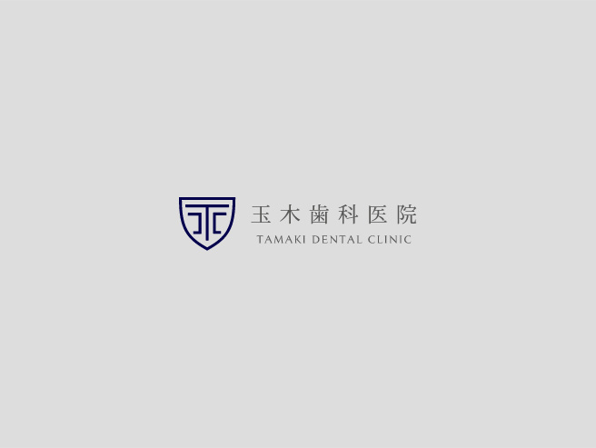

できる・できないではなく「やる」――歯科医師として、常に高みを目指し続ける。
「歯科医師になる」と決意した二つのきっかけ

私は会社員の父と専業主婦の母の元で育ち、自分もいつかは結婚し子ども育てる人生を歩むのだろうと考えていました。
そんな私が「仕事を持とう」「歯科医師になろう」と決意した背景には、二つのきっかけがあります。
一つは、母親に連れられ通いはじめた茶道教室での教えです。
私という人間を紐解いていくとき、その根底には、小学校3年生から高校3年生まで習っていた茶道の精神が深く根付いているのを感じます。相手を思いやる気持ち、もてなす準備の大切さ、作法だけにとどまらない、生きていく上で非常に重要なことをたくさん教えてもらいました。
茶道教室の生徒は母親世代、あるいはそれ以上の年齢の方がほとんどで、皆さんから非常に可愛がっていただいた記憶があります。
「あなたはこれから何にだってなれる」
「女性だからって主婦や子育てだけが人生じゃない」
ポジティブで刺激的な言葉をたくさんかけてもらい、子どもながら大いに感化されました。
人生の大先輩たちが口を揃えて「女性も仕事を持っていた方が楽しい」とおっしゃられるのを聞くうち、私も仕事を持って働こうと考えるようになっていきました。
二つめのきっかけは、高校2年の夏に参加したオープンキャンパスです。
茶道教室で特に目をかけてくださっていた方が、進路に迷っていた私に「甥が勤務している歯科大学のオープンキャンパスに参加してみない？」と声をかけてくれたのです。
せっかく誘ってもらったし……と軽い気持ちで参加したのですが、このお誘いこそ私の人生を方向づけたと言っても過言ではありません。
オープンキャンパスでは学内を見学させてもらうだけでなく、歯科医師の仕事を実際に体験できるプログラムが用意されていました。
今でも鮮明に覚えているのですが、模型の歯を削って詰め物をするというワークショップに参加したところ、これが想像以上に楽しくて……気づけば夢中になって取り組んでいる自分がいました。
周囲で見学していた大学生が「すごく上手」「歯科医に向いているよ」などと褒めてくれている声が聞こえて、それがとても嬉しくて、照れ笑いを隠しきれなかったですね。
実はもともと、集中力や手先の器用さに少しばかり自信があったのです。幼少期に遊んだアイロンビーズも得意でしたし、祖母のお裁縫をよく手伝って褒められていました。
大人になったいま振り返れば、おだててくれていただけとわかるのですが、高校生の私は目指すべき未来をようやく見つけたような気持ちになり「絶対、歯科医師になろう」と心に固く誓ったのです。
できる・できないではなく「やる」のだという覚悟
歯学部を受験し、歯科医師になる。――そう目標を定めたものの、実現にあたっては越えなければならない壁がいくつも立ちはだかっていました。
私が通っていたのは中高一貫の私立女子校で、エスカレーターで内部進学できるため同級生の大半は受験をしないという環境でした。進路相談で「理系転向して歯学部を受験する」と話したら、先生から「どうしてわざわざ」と問い詰められたのを覚えています。
説得の末に理解は得られたものの、先生たちも十分な情報を持っておらず周囲に仲間もいない中で、ひとり孤独に戦うしかない逆境です。
さらには学校が静岡県の山の中にあり寮生活をしていたため、朝から晩まで規則に縛られる生活を強いられていました。受験生だろうと試験前だろうと関係なく消灯は22時。隠れて勉強していたら叱られます。
もちろん塾にも通えないし独学するほかないのですが、食事の時間、お祈りの時間……と決められた規則に従っていたら、自由に使えるのは1日2時間あるかないか。焦りから精神的に追い詰められ、正直なんども挫けそうになりました。
しかしこの試練のおかげで、物事を限られた時間内に終える集中力が身についたのは間違いありません。できる・できないではなく「やる」しかないのだという覚悟も養われました。
国試をストレートで突破できたのも、この時の経験があったからこそだと今では有り難く思っています。
「歯科医師にゴールはない」学び続ける大切さ
歯科医師は過去の知識や経験に甘んじず、常に勉強し続けなければいけない仕事です。歯科医師になった以上、ゴールはないという気持ちで臨んでいます。
若い頃は金銭的に余裕がなく、しかしそれでも学ばなければという使命感から、当時の院長に給料の前借りをして勉強会に参加していた時代もありました。
というのも、歯科医師のセミナーは想像以上にお金がかかるのです。1回20万円超の勉強会もざらにありますし、吟味して必要そうなものだけを選んでも年間150万円から200万円ほどの経費が必要になります。
仕事が休みの日にわざわざ時間を作り、大金を費やして勉強会に行くなんて、20代の私にとっては非常にハードルの高い話でした。
そこまでする意味があるのだろうかと疑問も抱いたこともあるのですが、借金して歯周病治療のセミナーに参加していたちょうどそのタイミングで、私の意識を大きく変えることになる、忘れられない患者さまが来院されたのです。
「歯がぐらぐらする」とおっしゃるので診察してみると、歯茎から血が出ていて、明らかに歯周病の所見です。しかし以前に通われていた医院では「月に１度消毒をして様子を見ましょう」と言われていたようで、いっこうに状態が改善しないため病院を変えたと話されていました。
私はまず患者さまに歯周病の現状を丁寧に説明し、セミナーで学んだ知識を基に、治療の必要性と最善の治療法について了承を得ることに集中しました。歯周病治療は根気が要ります。患者さまご自身に「必ず治す」という覚悟がないと、完治する前に来院されなくなってしまうことも多いのです。
患者さまの理解と信頼を得て、納得の上で治療を継続してもらう。――それができたおかげで、重度の歯周病でぐらついていた歯は抜歯するほかなかったものの、それ以外はすべての歯を残すことができました。
治療を終えた際「もっと早く先生に診てもらえば良かった」「歯を残すことができて本当に嬉しい」と言っていただいた喜びは忘れられません。学ぶことの大切さ、学んだ知識を仕事に生かす楽しさを知った瞬間でした。
当院では玉木院長が、後進育成を目的として以前から精力的にセミナーを開催しています。
利害関係を排するためにあえて個人主催で行っており、実践的な内容、講師陣の豪華さも魅力的で、コロナ禍以前から私もたびたび参加しておりました。
当院で勤務することになったのも、実はセミナーに通う中で「歯周病の症例を発表してみないか」と声をかけていただいたことがきっかけです。学びの多い貴重な機会を頂戴し、玉木先生についていけば必ず成長できると確信して移籍を決めました。
しかもなんと、歯科医を目指すきっかけをくれたドクター（オープンキャンパスに誘ってくださった方の甥です）が玉木院長と古くからの知り合いだったという偶然まで発覚し、運命的な縁を感じずにはいられませんでした。
ずっと目標にしていた方と、今では同じ医師として一緒に食事をする関係になれているなんて……なんとも感慨深いものがあります。
私も年齢と経験を重ね、今後は学び続けることの重要性を伝えていくべき側の立場となりました。
患者さまのQOL向上に寄与し、口腔内にとどまらず全身の健康維持に貢献する。――歯科医としての理想を実現するためには、現状維持に甘んじるわけにいきません。常に高みを目指す姿勢が必須です。
医師はもちろんですし、衛生士や受付スタッフも皆で高め合い、学びを患者さまに還元していける医院を目指します。